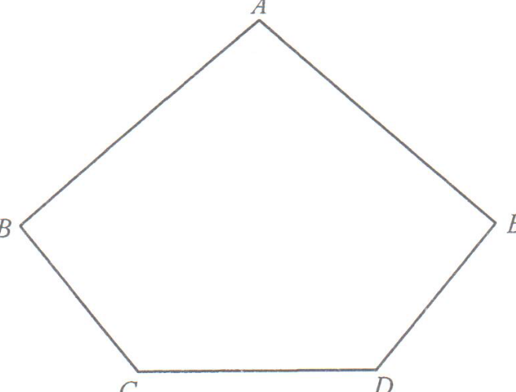

Trigonometry — Cosine Rule, Sine Rule, Optimising Area & Volume of a Pyramid
Figure 3(a) shows a pentagonal paper card \(ABCDB'\\). It is given that \[AB = AB' = 40\text{ cm},\quad BC = B'D = 24\text{ cm},\quad \angle ABC = \angle AB'D = 80^\circ.\]
(a) Suppose that \(105^\circ \le \angle BCD \le 145^\circ\).
(b) Suppose that \(\angle BCD = 132^\circ\). The paper card in Figure 3(a) is folded along \(AC\) and \(AD\) such that \(AB\) and \(AB'\\) join together to form a pyramid \(ABCD\) as shown in Figure 3(b). Find the volume of the pyramid \(ABCD\). 6 marks

Why reject the obtuse value? In \(\triangle ABC\), the angles must sum to \(180^\circ\). If \(\angle ACB \approx 113.4^\circ\), then \(\angle ACB + \angle ABC \approx 193.4^\circ > 180^\circ\), which is impossible.